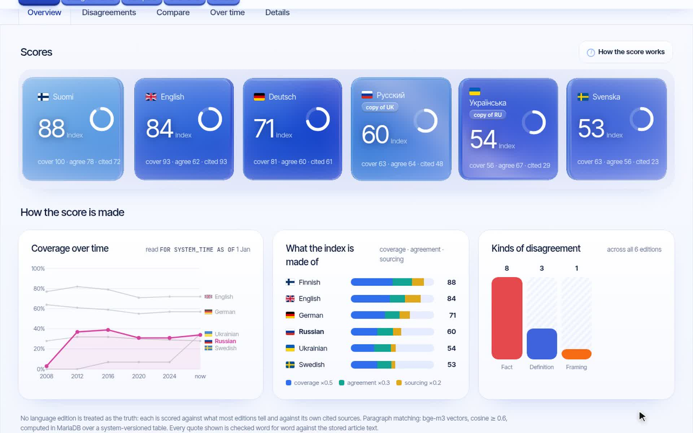
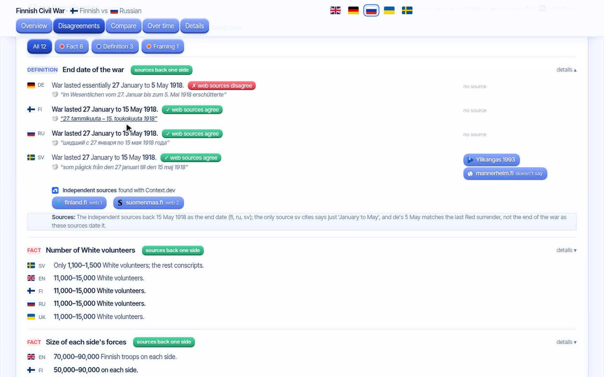
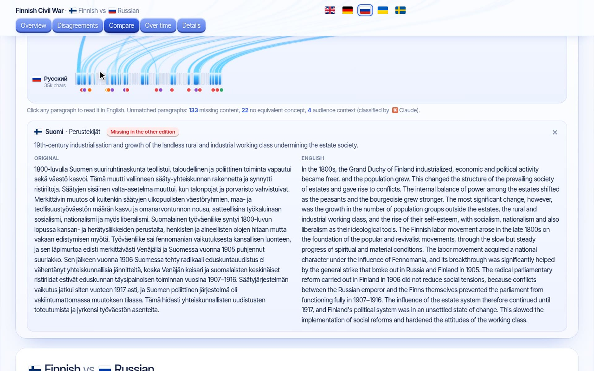
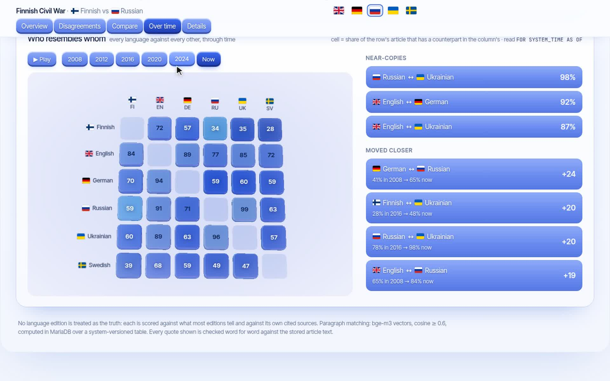
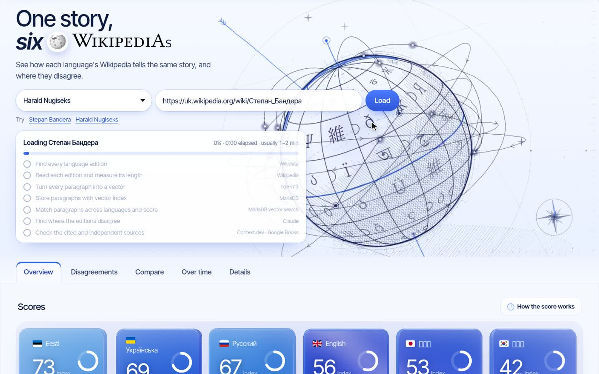

Finnish Civil War, 1918. Nobody reads six Wikipedias side by side.
Quotes checked word for word against the stored article text2
The idea
No edition is the truth.
consensus
told by ≥ 3
sources
cited pages + independent web
index per edition
50
30
20
coverage
agreement
sourcing
Every card shows its own formula, so the score can be defended line by line.
app/lens_engine.py3
Scores
Who tells the whole story?
Finnish
English
German
Russian
Ukrainian
Swedish

Swedish tells two thirds of the shared story and cites the least.
Suomen sisällissota (Finnish Civil War), six editions · live data4
Disagreements, checked
When did the war end?
1 Apr
15 Apr
1 May
15 May
1 Jun
5 May
15 May
sources back 15 May
found with Context.dev
320 backed
131
184 open
635 claims across 19 articles, each checked against sources. The war began 27 January.

5
Both articles, paragraph by paragraph.
The mirror
133 missing content22 no equivalent concept4 audience contextclick a gap → English, by Claude

Over time
Ukrainian follows Russian.
Share of paragraphs that have a match in the Russian article. The Ukrainian article appeared in 2016.
Each point is one FOR SYSTEM_TIME AS OF query.

7
Built on MariaDB
One system-versioned table with a vector index does the work.
VECTOR(1024) · bge-m3VECTOR INDEX · cosineWITH SYSTEM VERSIONINGreal Wikipedia edit times
SELECT a.chars,
1 - (SELECT MIN(VEC_DISTANCE_COSINE(a.emb, b.emb))
FROM lens_chunk FOR SYSTEM_TIME AS OF '2016-01-01' AS b
WHERE b.topic = a.topic AND b.lang = 'ru') AS sim
FROM lens_chunk FOR SYSTEM_TIME AS OF '2016-01-01' AS a
WHERE a.topic = 'Suomen sisällissota' AND a.lang = 'fi'
The same statement powers the scores, the mirror, the timeline and the 'who resembles whom' grid. 13,024 paragraph versions in the table.
app/kielipeili.py · SCORE_SQL, MATCH_SQL8
Any article
Paste a link. Two minutes later: scored.
9 of 68 editions
Stepan Bandera: the longest editions, incl. Polish

9
What the MariaDB host asked for
All six, built.
A score per language
and how it is calculated
Sources as ground truth
not one language
Fair vs unfair differences
context, framing, errors
Any article
the longest editions, found live
His test cases
Bandera with Polish, Nugiseks with Estonian
Change over time
FOR SYSTEM_TIME AS OF
From two conversations with the host · context/wikipediathroughtime/10


 Junction 2026
Junction 2026
 Polish
Polish Junction 2026
Junction 2026